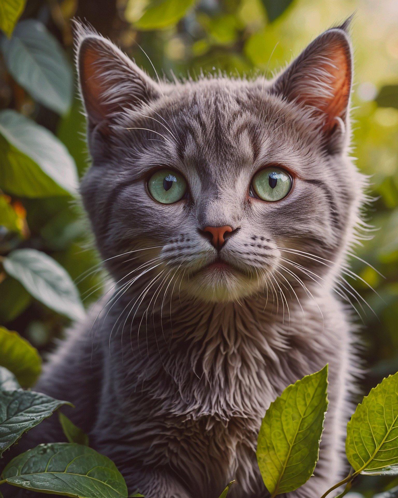

<-Menu principal
Gato
GATO DOMESTICO
(Felis catus)

El gato doméstico vive junto a los humanos, aunque también puede sobrevivir en la calle. Es un animal independiente, pero puede ser cariñoso con sus dueños. Le gusta dormir muchas horas al día y es más activo durante la noche. Es un excelente cazador de pequeños animales como ratones y aves.
Caracteristicas:
- Independencia:
Los gatos domésticos son conocidos por ser independientes. A diferencia de otras mascotas, como los perros, los gatos no necesitan atención constante.
- Higiene Personal:
Una de las características más destacadas de los gatos es su alto nivel de higiene personal. Pasan gran parte de su tiempo acicalándose. Este comportamiento no solo los mantiene limpios, sino que también ayuda a reducir el estrés y a mantener su pelaje en buen estado.
- Comportamiento Curioso:
La curiosidad es otra de las características del gato distintiva de los gatos domésticos. Les encanta explorar su entorno, escalar muebles y entrar en cualquier espacio pequeño que encuentren. Esta curiosidad natural los hace muy entretenidos, ya que siempre están buscando algo nuevo que investigar.
- Habilidades de Comunicación:
Los gatos tienen diversas maneras de comunicarse con sus dueños. Utilizan una combinación de maullidos, ronroneos, y lenguaje corporal. El ronroneo, por ejemplo, generalmente indica satisfacción, aunque también puede ser una forma de calmarse si están nerviosos. Los maullidos pueden expresar hambre, aburrimiento o simplemente buscar atención. Con el tiempo, los dueños de gatos aprenden a interpretar estos sonidos y a entender mejor las necesidades de sus mascotas.
- Sentido del Juego:
Aunque los gatos son animales independientes, disfrutan de los juegos interactivos con sus dueños. Actividades como perseguir una cuerda, jugar con plumas o cazar juguetes son fundamentales para estimular su instinto cazador y mantenerlos activos. Los juegos son también una excelente forma de fortalecer el vínculo entre el gato y su dueño, además de ayudar a prevenir el sobrepeso.